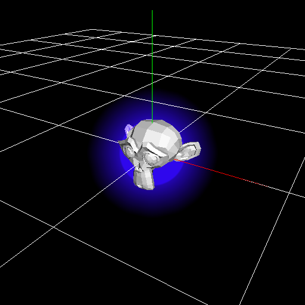

深度¶
概要¶
奥行き方向の処理に関するパラメーターを設定します。
パラメーター¶
Zオフセット¶
描画する時に、パーティクルの位置を奥行き方向に移動させます。 描画にのみ影響を与えます。 1.4では、このパラメーターが設定されているパーティクルのみ移動させます。子は移動されません。 例えば、ヒットエフェクトを表示する場合に、キャラクターにエフェクトがめり込まないようにするために使用できます。
(1)はキャラクターにめり込んでいるエフェクト、(2)はZオフセットです。 Zオフセットでキャラクターがエフェクトにめり込まなくなったことがわかります。

Zオフセット : 0 | Zオフセット : 2 |
|  |  |
Zオフセットによる拡大無効化¶
Zオフセットを使用するとエフェクトが描画される位置が移動し、カメラとの距離が変化します。 距離が変化すると描画されるエフェクトの大きさが変化します。 その変化が起きないようにするか、設定します。
Off | On |
|


描画優先度¶
ノード間の描画順序を指定します。値が大きいほど、後に描画されます。 描画優先度は歪みにも影響します。 描画優先度が0より小さい場合、歪みは背景のみを歪ませます。パーティクル同士で歪みは発生しません。 描画優先度が0以上の場合、背景と描画優先度が0より小さいパーティクルを歪ませます。
描画順序の例です。 (1)は(2)の親のノードで描画優先度は0です。 (2)の描画優先度は0です。 (3)の描画優先度は1です。 描画優先度により描画順序が決まり、描画優先度が同じノード間では子のノードが後に描画されることがわかります。

深度によるスケール変化の抑制¶
パーティクルとカメラの距離に依存せずに、ほぼ同じ大きさでパーティクルを表示するようにします。 ロックオンのマーカー等に適しています。
距離の影響を抑制することもできます。